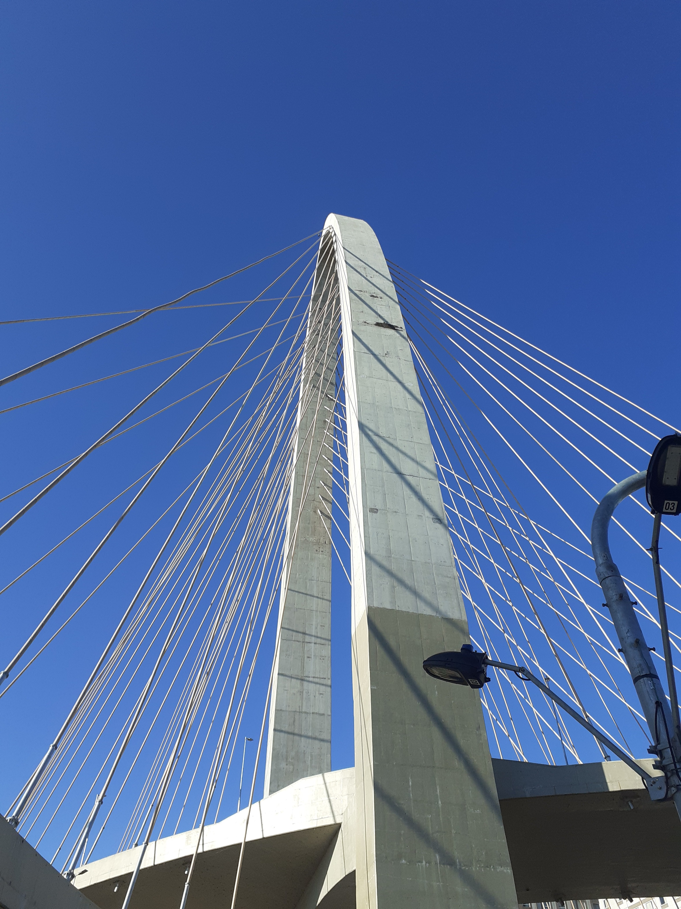

Veja um exemplo sobre usar marca d'agua
O exemplo a seguir foi baseado em uma foto original e posteriomente a mesma foi adaptada para receber a imagem usando o PAINT.NET
A foto original tirada em Julho de 2022
Agora com a marca d'agua neste exemplo:
O principal objetivo é evitar que a mesma apresenta um problema relacionado o plagio em redes sociais.